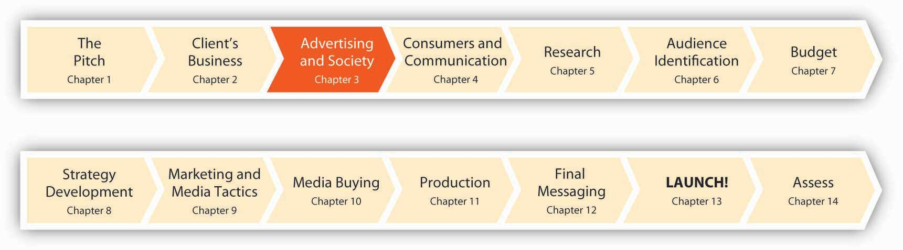

Figure 3.1 Build a Foundation
Advertising is part of the glue that holds our culture together. It allows us to share a common experience in a landscape populated (for better or worse) by brands, images, logos, and even silly jingles. We define who we are by what we buy and wear because we know that others judge us by what we buy and wear. And advertising influences those judgments. “We understand each other not by sharing religion, politics, or ideas. We share branded things. We speak the Esperanto of advertising, luxe populi,” says advertising professor and commercial culture observer James Twitchell.James Twitchell, Living It Up: Our Love Affair with Materialism (New York: Simon & Schuster, 2002), xv.
Advertising is a sort of “commercialized gossip,” a collection of stories that companies tell customers about their products in order to make them distinguishable from one another. Some brands do such a good job of holding our attention that they become cultural icons in their own right—Apple, Nike, even the lowly Charmin (where would we be without Mr. Whipple?), and the Keebler Elves. And in collectively listening to the commercialized gossip and buying the associated products, consumers align themselves with the images and stories, knowing that other consumers will know those same stories.
The cultural dimension of advertising came of age in the 1920s. Agencies and publicists no longer sought merely to convey objective facts about the products—they sought to link products with a particular lifestyle, imbue them with glamour and prestige, and persuade potential consumers that purchasing an item could be, as historian Alan Brinkley describes it, “a personally fulfilling and enriching experience.”Alan Brinkley, American History: A Survey (New York: McGraw-Hill, 1991), 648. The images of ads sought to both resonate with and help define the lifestyles of those who bought the products.
People seek to differentiate themselves, so much so that a particular kind of advertising—called dog whistle advertisingAdvertising that works like an inside joke, targeting a particular group with messages only that group can hear and appreciate.—targets a group with messages only that group can hear and appreciate. Like an inside joke, these ads reinforce a sense of belonging to the group and show that the advertised company “gets it” too. For example, Apple’s “Rip, Mix, Burn” campaign, which targeted young computer users with a message of ease-of-use of its iTunes music software, alluded to the prevailing (and illegal) practice of music sharing among that group.
Rip, Mix, Burn
(click to see video)This commercial for iTunes speaks directly to the target audience with words only they understand.
In many ways—for better or for worse—modern advertising may be the most significant U.S. contribution to global culture. Sociologist Andrew Hacker calls advertising “this country’s most characteristic institution.”Quoted in Stephen Fox, The Mirror Makers: A History of American Advertising and Its Creators (Champaign: University of Illinois Press, 1997), cover quote. But, to say the least, this contribution is not without controversy. Critics claim that ads manipulate the public into wasting money on unneeded products. Some say advertising has corrupted holidays like Christmas and Thanksgiving, making the season a time of materialism rather than a deeper celebration of thankfulness. There’s even a common rumor that Coca-Cola invented the modern-day Santa Claus (http://www.snopes.com/cokelore/santa.asp). Others just want to hide from the commercial messages that bombard them at every turn and enjoy some peace and quiet. Let’s take an objective look at advertising, warts and all.
After studying this section, students should be able to do the following:
Advertising supports the core principles that shaped our nation: free speech, competition, and democracy. Since colonial times, advertising has provided a source of vital information about our open, market-based economy. Two Nobel Laureates in economics, Dr. Kenneth Arrow and the late Dr. George Stigler, praise the value of advertising: “Advertising is a powerful tool of competition. It provides valuable information about products and services in an efficient and cost-effective manner. In this way, advertising helps the economy to function smoothly—it keeps prices low and facilitates the entry of new products and new firms into the market.”Kenneth Arrow and George Stigler, paper for the Advertising Tax Coalition, quoted in House Subcommittee on Select Revenue Measures of the Committee on Ways and Means, Miscellaneous revenue issues: hearings before the Subcommittee on Select Revenue Measures of the Committee on Ways and Means, 103rd Cong., 1st sess., 1994, http://www.archive.org/stream/miscellaneousrev02unit/miscellaneous rev02unit_djvu.txt (accessed February 4, 2009).
U.S. advertising accounts for about 2.5 percent of the country’s $14 trillion gross national product. American consumers rely heavily on advertising to influence how they spend some $9 trillion annually on various goods and services. A 1999 study by one of the country’s premier econometric modeling firms, the WEFA Group, and Nobel Laureate in economics Dr. Lawrence R. Klein further underscored this economic impact. The study found that advertising played a key role in generating 18.2 million of the 126.7 million jobs in the United States in that year. The report further concluded that advertising expenditures contributed between 12 and 16 percent of private sector revenues throughout the country, in rural as well as urban areas.
A later study, conducted in 2005 by the financial analysis firm Global Insight, demonstrated that advertising helps to generate more than $5.2 trillion in sales and economic activity throughout the U.S. economy annually. That represents 20 percent of the nation’s $25.5 trillion in total economic activity. This economic stimulus provided support throughout the economy for more than twenty-one million jobs, or 15.2 percent of the U.S. workforce. The purpose of the study was to quantify the economic and employment impacts of advertising. The study removed intervening effects (like consumers simply buying a product to replace an old one or a depleted one) to measure the role of advertising itself.
Advertising plays a strong role in the economy:
Advertising also plays a significant role in the business cycle. As the broader economy shifts between periods of growth and recession, advertising shifts its focus. During downturns, like the one we’re in now, ads may focus on the price of a product or service. If one company curtails advertising in order to cut costs during a downturn, another company might boost ad spending to grab customers and grow its market share. Advertising helps stimulate economic growth. In a country in which consumer spending determines the future of the economy, advertising motivates people to spend more. By encouraging more buying, advertising promotes both job growth and productivity growth both to help meet increased demand and to enable each consumer to have more to spend.
Companies spend money on advertising because it increases sales of existing products, helps grow adoption of new products, builds brand loyalty, and takes sales away from competitors. Although the exact return on investment (ROI) varies tremendously across industries, companies, campaigns, and media channels, studies have found that a dollar spent on advertising returns $3–20 in additional sales. To compete and grow in today’s diverse, ever-changing marketplace, businesses must reach their target customers efficiently, quickly alerting them to new product introductions, improved product designs, and competitive price points. Advertising is by far the most efficient way to communicate such information.
The economics of advertising extends to the media channels that depend on advertising revenues. Many forms of advertising support the creation of content and make that content available at a much lower price (or free). For example, roughly 75 percent of the cost of a newspaper is supported by advertising. If newspapers contained no advertising, they would cost four times as much to buy on the newsstand. Broadcast radio and TV rely exclusively on ads—people get news, music, and entertainment for free while advertisers get an audience. Forms of media that the public takes for granted would be extremely expensive to the reader or viewer or would simply be out of business without the revenues advertising produces. The demand created by advertising helps the economy to expand.S. William Pattis, Careers in Advertising (Blacklick, OH: McGraw-Hill Professional, 2004), 9.
Advertising supports the arts. Advertisers need music that calls attention to the brand. Musical artists visit ad agencies to meet with directors of music and pitch songs to them that they can use in ads. They come to agencies because they know that companies spend tens of millions of dollars on media buys. “The major record labels don’t have that kind of money,” says Josh Rabinowitz, senior vice president and director of music at Grey Worldwide. What’s more, “TV ads give you the kind of heavy rotation you can’t get on MTV anymore. In the very near future, some of the best bands will produce jingles.”Cora Daniels, “Adman Jangles for a Hit Jingle,” Fast Company, July 2007, http://www.fastcompany.com/magazine/117/fast-talk-rabinowitz.html (accessed February 4, 2009).
Yael Naim became an overnight sensation when her song “New Soul” was used in this MacBook Air commercial.
For example, Jonny Dubowsky, lead singer and guitarist for Jonny Lives! uses corporate sponsorships to get exposure for his indie band. The band debuted a single on an EA video game and launched a video at nine hundred American Eagle stores.Cora Daniels, “Band Plays a Brand-New Game,” Fast Company, July 2007, http://www.fastcompany.com/magazine/117/fast-talk-dubowsky.html (accessed February 4, 2009). For those with (slightly) different musical tastes, it’s worth noting that “rock star” Barry Manilow wrote advertising jingles before he crossed over to recording songs. His credits include the Band-Aid song (“I am stuck on Band-Aid, cuz Band-Aid’s stuck on me”) and the theme for State Farm insurance (“And like a good neighbor, State Farm is there”).AllExperts, “Manilow, Barry,” http://en.allexperts.com/q/Manilow-Barry-511/Manilow-TV-jingles.htm (accessed July 17, 2008).
The perspective called the economics of informationA perspective that shows how consumers benefit from viewing advertising. shows how consumers benefit from viewing advertising. By providing information, advertising reduces consumers’ search costs (time spent looking for products) and reduces disutility (unhappiness or lost value) from picking the wrong products. Advertising performs the following functions:
Advertising is a major industry. It contributes to the economy directly (via the jobs it creates to produce ad messages) but also indirectly as it stimulates demand and provides information about other products and services.
After studying this section, students should be able to do the following:
Advertising is part and parcel of the daily world in which we all live—it’s the lifeblood of popular culture. It’s also an incredibly powerful mirror that reflects our values, aspirations, and fears (whether of social rejection, financial hardship, or just plain body odor). True, we may not always like what we see in this mirror. And it may not deliver a totally accurate reflection—like the looking glass in a funhouse, it may be distorted to magnify our noblest dreams as well as our basest desires. It’s a formidable weapon that people, businesses, and countries can harness for good or exploit for evil.
Advertising’s cultural impact is hard to overlook, although many people do not seem to realize how much these pervasive messages influence their preferences for movie and musical heroes, the latest fashions in clothing, food, and decorating choices, and even the physical features that they find attractive or ugly in men and women.
For example, consider the product icons that companies use to create an identity for their products. Many imaginary creatures and personalities, from the Keebler Elves to the Burger “King,” have at one time or another been central figures in popular culture. Although these figures never really existed, many of us feel as if we “know” them. Check out the Icon Advertising Museum that will soon open in Kansas City to learn more. Even better, visit the museum’s Web site to see how many icons you recognize: http://advertisingiconmuseum.org.
To give you a head start, here are the most popular spokescharacters of 2008, according to research done by the research company Marketing Evaluations, which measures the public familiarity and appeal of more than six hundred characters featured in advertising campaigns:
Advertising pervades all of our lives, and its presence only continues to grow as advertisers expand the formats they use to reach us and as we try to slake our growing appetites for information and entertainment. The average adult is exposed to about 3,500 pieces of advertising information every single day—up from about 560 per day thirty years ago.
Here’s a statistic to chew on: American Internet users ages twelve and older spend an average of 6.1 hours per day interacting with video-based entertainment. About four of these hours are devoted to television viewing (live and recorded), while the rest goes to video games, Web and PC video, DVDs, and video on mobile devices. This sizeable chunk of time is projected to grow to eight hours per day by 2013. Where will the growth come from? One answer is online video; Nielsen tells us that in 2007 Americans watched 7.5 billion streams and 16.4 billion minutes in total of online video, and children ages two to eleven spend almost one-third of their online time watching videos. Expect advertisers to follow suit.eMarketer, “Video to Consume One-Third of Each Day” June 25, 2008, http://www.Emarketer.Com/Article.Aspx?Id=1006381&Src=Article1_Newsltr (accessed June 25, 2008); Brian Stelter, “Whichever Screen, People Are Watching,” New York Times Online, July 8, 2008 (accessed July 8, 2008).
So, is advertising a vapid cloud of superfluous fluff, or is it an efficient and entertaining process that enriches our lives? Obviously that depends on whom you ask. Let’s focus (first) on the reasons we should regard advertising as a glass half full. Then we’ll deal with the negative stuff.
Can advertising save lives? Let’s investigate a recent project that answers a resounding “yes!” A public health professor named Val Curtis spent years in the developing world fighting what seems like a simple problem but turns out to be a frustrating battle: get people to wash their hands regularly with soap (sound like your mother?). It turns out that dirty hands spread diseases like diarrhea that kill a child somewhere in the world about every fifteen seconds, and about half those deaths could be prevented with the regular use of soap.
Dr. Curtis, an anthropologist then living in Burkina Faso, was almost ready to throw in the towel (pardon the pun). Then she decided to ask some consumer goods companies how they would convince people to wash their hands using the same techniques they rely upon to sell vitamins or deodorant that people tend to consume out of habit. As she observed, “There are fundamental public health problems, like hand washing with soap, that remain killers only because we can’t figure out how to change people’s habits. We wanted to learn from private industry how to create new behaviors that happen automatically.”Charles Duhigg, “Warning: Habits May Be Good for You,” New York Times Magazine, July 13, 2008, http://www.nytimes.com/2008/07/13/business/13habit.html? pagewanted=1&sq=Warning%20-%20Habits%20May%20Be%20Good%20 for%20You&st=cse&scp=1 (accessed July 17, 2008). These companies know very well how to create and reinforce such habits. For example, a century ago it was rare for anyone to brush her teeth twice a day, but efforts by Colgate and others changed all that.
Public health campaigns have had limited success in changing unhealthy habits. For example, evidence suggests that antidrug campaigns actually increase drug use, presumably because they remind people about the drugs to which they’ve become attached. It’s sort of like telling someone, “Whatever you do, don’t think of an elephant.” Did that work?
Procter & Gamble, Colgate-Palmolive, and Unilever accepted Dr. Curtis’s challenge and joined an initiative called the Global Public-Private Partnership for Handwashing with Soap. The group’s goal was to double the handwashing rate in Ghana, a West African nation where almost every home contains a soap bar but only 4 percent of adults regularly lather up after they use the toilet.
When participants started to look into the issue, they had the insight that the problem resembled one Procter & Gamble first encountered when it introduced Febreze, a product it developed to remove odors from smelly clothes and furniture. Its ads initially focused on smelly situations, like pets, sweaty teenagers, and stinky minivan interiors. The launch flopped, and P&G was ready to kill the product. Then its researchers found that consumers liked Febreze when they used it, but that many customers simply forgot that it was in the house. P&G’s ads needed to give them the right cues to use the product. The company identified one: the act of cleaning a room. So, it created commercials showing women spraying Febreze on a perfectly made bed and on freshly laundered clothing instead of in smelly areas. The ads worked well—and the more people sprayed Febreze, the more automatic the behavior became. Now consumers buy $650 million of the stuff each year.
Back to handwashing in Ghana: studies showed that while about half of the people washed their hands before they ate or after they used the bathroom, only about 4 percent of Ghanaians included soap in this process. They also found that mothers often didn’t see symptoms like diarrhea as abnormal but instead viewed them as a normal aspect of childhood. But they also unearthed an interesting tidbit: Ghanaians did use soap when they felt that their hands were dirty, for example, after they cooked with grease. This habit was prompted by feelings of disgust, and they applied soap to eliminate this bad feeling.
So the team came up with a big idea: create a habit to instill a feeling of disgust when people use the toilet, so that the emotional reaction would cue the use of soap. While many of us don’t hesitate to grimace at the thought of a less-than-sparkling bathroom, in many places in the developing world any toilet is a symbol of cleanliness, because flush toilets have replaced pit latrines. So the task was to create commercials to teach the audience to feel disgust after they went to the bathroom. The solution: the team shot ads of mothers and children walking out of bathrooms with a glowing purple pigment on their hands that contaminated everything they touched. These spots didn’t sell soap use, but rather disgust. Soap was almost an afterthought—one fifty-five-second television commercial only showed soapy hand washing for four seconds. Still, the link between disgust and its removal via soap was clear: the team’s follow-up research showed a 13 percent increase in the use of soap after the toilet, while the number of Ghanaians who reported washing their hands with soap before they eat rose by an impressive 41 percent.Charles Duhigg, “Warning: Habits May Be Good for You,” New York Times Magazine, July 13, 2008, http://www.nytimes.com/2008/07/13/business/13habit.html?pagewanted=1&sq=Warning%20-%20Habits%20May%20Be%20Good%20for%20You&st=cse&scp=1 (accessed July 17, 2008). This is no soap opera: advertising can save lives when it’s used creatively and when it thoughtfully applies what social scientists understand about human behavior.
The Advertising CouncilA private, nonprofit organization that marshals volunteer talent from the advertising and communications industries, the facilities of the media, and the resources of the business and nonprofit communities to deliver critical messages to the American public., a private, nonprofit organization, is one of the most important and influential organizations in the advertising industry. The Ad Council coordinates advertisers, advertising agencies, and media in its efforts to create effective public service messages and other forms of advertising and deliver those messages to the public.S. William Pattis, Careers in Advertising (Blacklick, OH: McGraw-Hill Professional, 2004), 13.
Advertising agencies enhance society’s well-being when they create (usually pro bono, or for free) public service announcements (PSAs)Not-for-profit advertising messages designed to change the society’s culture as they focus awareness on specific issues that address the public as a whole. like the “Friends don’t let friends drive drunk” campaign. PSAs intend to change the society’s culture as they focus awareness on specific issues that address the public as a whole. For example, after the anti–drunk driving campaign, its creators reported that 70 percent of people said that the ad helped them to stop someone from driving drunk.
On May 29, 2008, SS+K launched a PSA they’d produced pro bono (for free) in support of United Nations Peacekeepers.
UN Peacekeepers
(click to see video)The spot, featuring U.N. Messenger of Peace George Clooney, is entitled “Peace Is Hard.” It is being distributed primarily online via social media outlets such as YouTube, Facebook, MySpace, and others.
Like PSAs, advocacy advertisingCampaigns designed to influence public opinion about an issue relevant to some or all members of a society, espousing a particular point of view that not everyone may share. intends to influence public opinion about an issue relevant to some or all members of a society. However, advocacy ads espouse a particular point of view that not everyone may share, so they tend to be more strident in tone. For example, while virtually everyone advocates designating a driver to abstain from drinking (even the alcohol industry), not all of us agree with messages that exhort us to practice safe sex or avoid eating meat.
The organization People for the Ethical Treatment of Animals (PETA) is a good example of a group that employs graphic messages to drive home its agenda, whether it’s advocating an end to using lab animals for product testing or urging a boycott of the fur industry. PETA has used former Baywatch actress Pamela Anderson and ex-Beatle Paul McCartney in spots to protest the handling and killing of poultry, and most recently the group even involved the Pope in its efforts. The group’s KentuckyFriedCruelty.com Web site featured the Pope’s photo next to a quote it attributed to him: “Animals, too, are God’s creatures.…Degrading [them] to a commodity seems to me in fact to contradict the relationship of mutuality that comes across in the Bible.” (Note: PETA didn’t ask for or receive the Catholic Church’s permission to use the photo or the quote.)Richard Gibson, “PETA Uses Religion in Boycott,” Wall Street Journal Online Edition, April 11, 2007, http://online.wsj.com/article/SB117625218878365729.html (accessed April 11, 2007).
Many not-for-profit organizationsA corporation that exists primarily for educational or charitable purposes, whose shareholders or trustees do not benefit financially., including museums, zoos, and even churches, rely on advertising to recruit members, attract donations, and promote their activities. Churches aggressively brand themselves to fill empty pews. For example, the “megachurch” Willow Creek Community Church near Chicago uses sophisticated marketing techniques (including selling copies of sermons on CDs) to attract over twenty-five thousand worshippers.
Local governments use advertising to attract new businesses and industries to their counties and cities. Even states are getting into the act: We’ve known for a long time that I ♥ NY, but recently Kentucky and Oregon hired advertising agencies to develop statewide branding campaigns. The official state motto of Oregon is now “Oregon. We love dreamers.”Stuart Elliott, “Introducing Kentucky, the Brand,” New York Times Online, June 9, 2004 (accessed July 19, 2008). A publicity campaign to select a state slogan for New Jersey generated a lot of questionable entries, including “It’s Jersey: Got a problem with that?” “New Jersey: We’ll look the other way,” and “New Jersey: Be sure to pick up a complimentary chemical drum on your way out.” The state went with something a bit less colorful: “New Jersey, Come See For Yourself.” Mister Snitch!, “Top Ten Rejected Jersey State Slogans,” October 28, 2005, http://mistersnitch.blogspot.com/2005/10/top-ten-rejected- jersey-state-slogans.html (accessed July 19, 2008); “Governor’s Call to Action,” January 12, 2006, http://www.state.nj.us/slogan (accessed July 19, 2008).
How far should nonprofit organizations go to promote their agendas? The Nationwide Children’s Hospital in Columbus, Ohio (a $50 million donation from the Nationwide Insurance Company prompted this name) recently came under fire for its embrace of corporate sponsors. In 2008 the hospital announced plans to rename its emergency department the Abercrombie & Fitch Emergency Department and Trauma Center in exchange for a $10 million donation from A&F. Citing A&F’s racy ads that feature (apparently) underage models, an advocacy group called The Campaign for a Commercial-Free Childhood vigorously protested the name and submitted a letter signed by more than a hundred doctors and child welfare advocates. A spokesman explained, “A company with such cynical disregard for children’s well-being shouldn’t be able to claim the mantle of healing.”Quoted in Natalie Zmuda, “Children’s Hospital in Hot Water over Corporate Sponsorships: Critics Dismayed by Association with Racy Retailer Abercrombie & Fitch,” Advertising Age, March 12, 2008, http://adage.com/abstract.php?article_id=125672 (accessed March 12, 2008). What do you think: is this use of corporate sponsorship over the top, or would forbidding it be throwing out the baby with the bathwater?
SS+K regularly engages in philanthropic work through an informal organization it calls David’s Work. This is named after David McCall, the creative founder who was on the board of SS+K before his untimely death while on a mission with his wife. After leaving the ad biz, David donated his time and effort to doing good, so SS+K does something in his honor every few months; typically this involves fundraisers for local schools.
In the early twenty-first century, we are witnessing a profound shift in priorities as people clamor for products and services that are good for their bodies, good for their community, and good for the earth. Some analysts call this new value conscientious consumerismConsumers’ demand for products and services that are good for their bodies, good for their community, and good for the earth.. They estimate the U.S. market for body-friendly and earth-friendly products at more than $200 billion.
In particular, some marketers single out a type of consumer they call LOHASConsumers who worry about the environment and spend money to advance what they see as their personal development and potential; also called cultural creatives.—an acronym for “lifestyles of health and sustainability.” This label refers to people who worry about the environment and spend money to advance what they see as their personal development and potential. These so-called “Lohasians” (others refer to this segment as cultural creatives) represent a great market for products such as organic foods, energy-efficient appliances, and hybrid cars, as well as alternative medicine, yoga tapes, and ecotourism. One organization that tracks this group estimates they make up about 16 percent of the adults in the United States, or 35 million people; it values the market for socially conscious products at more than $200 billion.http://www.lohas.com (accessed February 1, 2009).
Just how widespread is conscientious consumerism? In a 2007 survey, eight in ten consumers said they believe it’s important to buy green products and that they’ll pay more to do so. Corporate responsibility is now one of the primary attributes shoppers look for when they decide among competing brands. Consumer research strongly suggests that this awareness often starts with personal health concerns and then radiates outward to embrace the community and the environment. Predictably, advertisers have been quick to jump on the green bandwagon. Green marketingAdvertising and marketing that emphasizes how products and services are environmentally responsible., which emphasizes how products and services are environmentally responsible, is red hot. Established agencies are setting up divisions to specialize in green campaigns and a host of new agencies (with names like The Green Agency and Green Team) are opening to meet the demand.
The advertising industry has the potential to radically change people’s attitudes and (more importantly) their behaviors as we face the real consequences of environmental contamination. Unfortunately, there’s also the very real potential that it will “poison the well” as it jumps onto the bandwagon a bit too energetically. It’s almost impossible to find an ad for virtually any kind of product, service, or company that doesn’t tout its environmental credentials, whether the focus of the ad is a detergent, a garment, a commercial airplane, or even an oil company. As a result, complaints about greenwashingAdvertising and marketing that misleads consumers about a product’s environmental benefits., or misleading consumers about a product’s environmental benefits, are skyrocketing. One egregious example is an ad for a gas-guzzling Japanese sport utility vehicle that bills the car as having been “conceived and developed in the homeland of the Kyoto accords,” the international emissions-reduction agreement.
To prevent a greenwash backlash, it’s imperative for advertisers to act responsibly. There’s nothing wrong with trumpeting the environmental value of your product—if the claims are accurate and specific. Or you can suggest alternative methods to use your product that will minimize its negative impact—for example, Procter & Gamble runs an ad campaign in the United Kingdom that urges consumers of its laundry detergents to wash their clothing at lower temperatures.Suzanne Vranica, “Ad Houses Will Need to Be More Nimble: Clients Are Demanding More and Better Use of Consumer Data, Web,” Wall Street Journal, January 2, 2008, B3; Eric Pfanner, “Cooling Off on Dubious Eco-Friendly Claims,” New York Times Online, July 18, 2008, http://www.nytimes.com/2008/07/18/business/media/18adco.html? scp=1&sq=Cooling%20Off%20on%20Dubious%20Eco-Friendly%20Claims&st=cse (accessed July 19, 2008). The FTC (Federal Trade Commission) provides guidelines to evaluate green advertising claims; for example, it suggests that “if a label says ‘recycled,’ check how much of the product or package is recycled. The fact is that unless the product or package contains 100 percent recycled materials, the label must tell you how much is recycled.”“Sorting Out ‘Green’ Advertising Claims,” Federal Trade Commission, April 1999, http://www.ftc.gov/bcp/edu/pubs/consumer/general/gen02.shtm (accessed July 19, 2008).
The advertising industry can help us heal our toxic environment: please don’t poison the well.
Advertising creates awareness and persuades people to change their opinions or behaviors. The same principles that advertisers use to sell cameras and cars apply to conservation or even contraception. Prosocial messages can significantly influence consumers’ daily lives in positive ways. Of late we see a huge emphasis on green messages; these can help to galvanize the world to take action in order to save the environment—if they don’t turn us off first by bombarding us with insincere claims.
Advertising has been described as being the good and the bad (and sometimes ugly).
After studying this section, students should be able to do the following:
We’ve considered some of the good that advertising can do. Now let’s check out some of the bad—and the ugly. It’s certainly not hard to identify the hot buttons—a lot of people slam advertising for a lot of different reasons. Some objections may be a bit paranoid, as when the social critic Vance Packard wrote more than fifty years ago, “Large-scale efforts are being made, often with impressive success, to channel our unthinking habits, our purchasing decisions, and our thought processes by the use of insights gleaned from psychiatry and the social sciences.”Quoted in William Leiss, Stephen Kline, and Sut Jhally, Social Communication in Advertising: Persons, Products and Images of Well-Being (Scarborough, Ontario: Nelson Canada, 1990), 11. Still, there are plenty of valid reasons to question the methods and goals of the advertising industry. Forewarned is forearmed. Here are some common objections we hear:
Let’s examine these charges one by one.
Ads make us feel bad about ourselves as they constantly throw images of perfect, beautiful people in our faces.
You are how (you think) you look. Our physical appearance is a large part of our self-concept. Body imageA person’s subjective evaluation of his or her physical self. refers to a person’s subjective evaluation of his or her physical self. The key word here is subjective—your image of your body may not be what your body looks like to other people. You might have an exaggerated notion of the bulge of your muscles or the bulge of your thighs. Knowing that people’s body images are often distorted, some marketers exploit our insecurities and suggest that purchasing their product will help alleviate the “problem.”
Indeed, advertising can affect a person’s self-esteem when it takes advantage of our powerful instinct to gauge our physical and mental states relative to others. Numerous studies have noted that female college students compare their physical appearance to that of models in ads. Participants who viewed ads with beautiful women expressed lower satisfaction with their own appearance afterwards than did women who didn’t see these ads. Another study showed that as little as thirty minutes of TV programming can alter young women’s perceptions of their own body shape.Cited in Michael R. Solomon, Consumer Behavior: Buying, Having and Being, 7th ed. (Upper Saddle River, NJ: Prentice Hall, 2005).
One of the prevailing arguments in the history of advertising is whether advertising merely reflects existing cultural values and views of gender or whether it constructs and creates those views. Some analysts believe that advertising is merely a “mirror” of culture. Others argue that advertising is a “distorted mirror” that both reflects and shapes our culture.Richard W. Pollay, “The Distorted Mirror: Reflections on the Unintended Consequences of Advertising,” Journal of Marketing 59 (1986): 18–36, and Morris B. Holbrook, “Mirror, Mirror, on the Wall, What’s Unfair in the Reflections on Advertising?” Journal of Marketing 51 (1987): 95–103. The advertising industry likes to say that ads simply reflect existing values because this view absolves advertisers of blame for perpetuating unreal standards. Denise Fedewa, senior vice president and planning director for the LeoShe subsidiary of the Leo Burnett agency, presented an updated, unified view when she said, “Advertising is so fascinating, because it’s both a mirror of the culture and it moves culture forward. I think the best advertising…taps into a direction that we are moving in, but we are not there yet, and it helps take us there…I think we’ve gotten a lot better at doing that…in tapping into where they [women] are moving next.”Eileen Fischer, “Interview with Denise Fedewa,” Advertising and Society Review 4, no. 4 (2003), http://muse.jhu.edu/journals/advertising_and_society_review/toc/asr4.4.html.
A provocative advertising campaign by Dove features underwear-clad women with imperfect bodies to call attention to the unrealistic messages about our bodies that some marketing messages communicate. Unilever (which makes Dove soap) initiated the Campaign for Real Beauty after its research showed that many women didn’t believe its products worked because the women shown using them were so unrealistic.Erin White, “Dove ‘Firms’ with Zaftig Models: Unilever Brand Launches European Ads Employing Non-Supermodel Bodies,” Wall Street Journal, April 21, 2004, B3. The marketers decided to focus the campaign’s message on reassuring women about their insecurities by showing them as they are—wrinkles, freckles, pregnant bellies, and all. Taglines ask “Oversized or Outstanding?” and “Wrinkled or Wonderful?” Dove even has a Web site (campaignforrealbeauty.com) where visitors can view the ads and cast their votes. For a real treat (and to appreciate how much “postproduction editing” goes into the fashion business), see how experts morph an average woman into a billboard beauty on this Dove Web site: http://www.boardsmag.com/screeningroom/commercials/3421.
Perhaps because of the success of the Dove campaign, other companies also are turning to ordinary people instead of professional models when they advertise. As an extension of its “I’m lovin’ it” campaign, McDonald’s held a casting call for consumers (as opposed to professional models) who will appear on its world cup and bag packaging. Nike and Wal-Mart also have run advertisements with average-looking employees.Laura Petrecca, “More Ads Star Regular People,” USA Today Online, April 3, 2006, http://www.usatoday.com/money/advertising/2006-04-02-mcdonalds-usat_x.htm (accessed February 13, 2009).
Will this emphasis on “keeping it real” continue, or will it give way to consumers’ desires to aspire to perfection (and buy the products they think will help them get there)?
So, which way is it? Is advertising a mirror or an idealized picture? It’s likely that advertising both reflects and affects gender roles in our daily lives. Since the 1970s, researchers have investigated the extent to which American advertising portrays women in stereotypical roles. Most report that ads do tend to portray women as subservient to men, as preoccupied with physical attractiveness, and as sex objects who are preoccupied with their appearance, and they tend to minimize depictions of women in positions of authority. To rub salt into the wound, this media exposure can indeed influence real women’s self-concepts and aspirations.Earl D. Honeycutt, Jr., “Gender Role Portrayals in Japanese Advertising: A Magazine Content Analysis,” Journal of Advertising, March 22, 1998, http://www.accessmylibrary.com/coms2/summary_0286-391205_ITM (accessed February 10, 2009).
James Twitchell, in his book Twenty Ads that Shook the World, takes a more positive view. Using the example of the ads for Charlie perfume in the 1970s and 1980s, he shows how this advertising provided the imagery of the new woman in the workplace: striving, not strident, proud of her accomplishments and not afraid to say so, but not the dour “make room for me or else” feminist that the press portrayed at the time. Twitchell’s view is that Madison Avenue is not immoral in imposing stereotypes but amoral in reflecting prevailing roles; that is, advertising follows whichever way the wind is blowing. The point is that if stereotyped roles didn’t sell products, advertisers would gladly use different imagery.James Twitchell, Twenty Ads that Shook the World: The Century’s Most Groundbreaking Advertising and How It Changed Us All (New York: Three Rivers Press, 2001).
One celebrated ad campaign—Nike’s “If You Let Me Play”—challenged stereotypes about women while at the same time achieving Nike’s advertising objective of enticing more women to buy its shoes. This effort successfully blended statistics with a powerful story that showed how exclusion and outdated norms concerning girls’ participation in school sports hurt their self-esteem and even their health. The campaign included lines like these:
“If you let me play sports, I will like myself more. I will have more self-confidence, if you let me play sports. If you let me play, I will suffer less depression.…If you let me play, I will be more likely to leave a man who beats me. If you let me play, I will be less likely to get pregnant before I want to. I will learn what it means to be strong. If you let me play sports.”Jean Grow and Joyce M. Wolburg, “Selling Truth: How Nike’s Advertising to Women Claimed a Contested Reality,” Advertising & Society Review 7, no. 2 (2006): 1.
And what about guys—is what’s good for the goose good for the gander? Let’s not forget that advertising also can influence how boys and men feel about themselves. In addition to “cheesecake” ads that show plenty of female skin, there are plenty of “beefcake” ads. That helps to explain why men spend $7.7 billion on grooming products globally each year. In Europe, 24 percent of men younger than age thirty use skincare products—and 80 percent of young Korean men do.Vivian Manning-Schaffel, “Metrosexuals: A Well-Groomed Market?” http://brandchannel.com (accessed May 22, 2006).
Ripped abs aside, even a casual analysis of TV commercials for products from laundry detergent to computers turns up no shortage of spots that depict men as incompetent, bumbling idiots. Organizations like Stand Your Ground and the U.K.-based Advertising Standards Authority object to misandryHatred or disdain toward men. (the male counterpart of misogynyHatred or disdain toward women., which means a hatred of women).Advertising Standards Authority, “Taste and Decency—The Depiction of Men,” http://www.asa.org.uk/asa/focus/background_briefings/Taste+and+ Decency+-+the+depiction+of+men.htm (accessed July 19, 2008); http://www.standyourground.com (accessed July 19, 2008). They protest ad campaigns that show men acting as buffoons who do nothing but ogle cars and women and who can’t perform the simplest household tasks.Courtney Kane, “Men are Becoming the Ad Target of the Gender Sneer,” New York Times Online, January 28, 2005, http://www.nytimes.com/2005/01/28/business/media/28adco.html (accessed February 13, 2009).
Ads reinforce negative ethnic and racial stereotypes.
Advertisements have a long history of relying on stereotypical characters to promote products. For many years Aunt Jemima sold pancake mix and Rastus was a grinning black chef who pitched Cream of Wheat hot cereal. The Gold Dust Twins were black urchins who peddled a soap powder for Lever Brothers and Pillsbury hawked powdered drink mixes using characters such as Injun Orange and Chinese Cherry—who had buck teeth.
These negative depictions began to decline in the 1960s as the civil rights movement gave more power to minority groups and their rising economic status began to command marketers’ respect. Frito-Lay responded to protests by the Hispanic community and stopped using the Frito Bandito character in 1971, and Quaker Foods gave Aunt Jemima a makeover in 1989. As part of its fiftieth-anniversary celebration for Crest toothpaste, Procter & Gamble reintroduced its “Crest Kid,” who first appeared in 1956 as a “white bread,” apple-cheeked girl painted by artist Norman Rockwell. It’s telling that the new Crest Kid is Cuban American. Similarly, a recent campaign gives a radical makeover to the black Uncle Ben character who appeared on rice packages for more than sixty years dressed as a servant. (White Southerners once used “uncle” and “aunt” as honorary names for older African Americans because they refused to address them as “Mr.” and “Mrs.”) The character is remade as Ben (just Ben), an accomplished businessman with an opulent office who shares his “grains of wisdom” about rice and life on the brand’s Web site.Marty Westerman, “Death of the Frito Bandito,” American Demographics, March 1989, 28; Stuart Elliott, “Uncle Ben, Board Chairman,” New York Times Online, March 30, 2007 (accessed March 30, 2007); http://www.unclebens.com (accessed February 1, 2009).
These positive steps are motivated by both good intentions and pragmatism. Ethnic minorities spend more than $600 billion a year on products and services. Immigrants make up 10 percent of the U.S. population, and California is less than half Caucasian. Advertisers and their agencies couldn’t ignore this new reality even if they wanted to.
Multicultural advertisingAdvertising designed to attract racial and ethnic segments that have traditionally been considered minorities. is a major force in today’s industry. Like the green-marketing phenomenon, the changing environment motivates both well-established agencies as well as those that specialize in talking to racial and ethnic segments to redouble their efforts. The Advertising Research Foundation, for example, sponsors a Multicultural Research Council to promote a better understanding of relevant issues.Advertising Research Foundation, http://www.thearf.org/assets/multicultural-council (accessed July 19, 2008). We still have a way to go to overcome stereotypes—not all African Americans are into hip-hop and not all Asian Americans are studious—but many agencies are working hard to address these issues, especially as they aggressively try to add diversity to their organizations.
Ads invade our privacy.
Behavioral targetingIn online marketing, the use of key demographic data, such as the user’s address, age, interests, and browsing history, to plan online media. is a fancy way to describe the growing number of techniques that allow advertisers to track where you surf on the Web so that they can deliver relevant ads to you. As we’ve discussed elsewhere in this book, that’s very convenient, and it’s clear that ads tailored to your interests are going to be both less intrusive and more valuable to you—but at what cost?
For example, cable and phone companies say their growth increasingly depends on being able to deliver targeted advertising to their Internet and TV customers. But privacy advocates are not happy about this, and due to their vocal protests some companies are backpedaling on plans to integrate advanced ad-targeting technology. NebuAd, one particularly controversial form of tracking software, tracks users wherever they go on the Web. Company executives claim the data can’t be traced back to individuals; instead, the software categorizes consumers as they surf the Web. Marketers then buy ads to appear online before certain subgroups of consumers when the technology recognizes their encrypted identity. Categories can be made quite specific; for example, you could come to the attention of an appliance manufacturer if you searched for “microwave ovens” within the past month.Emily Steel and Vishesh Kumar, “Targeted Ads Raise Privacy Concerns: Pressure Could Imperil Online Strategy Shared by Phone and Cable-TV Firms,” Wall Street Journal, July 8, 2008, B1.
At the end of the day, just how important is this privacy issue? Scott McNealy, CEO of Sun Microsystems, famously observed at a 1999 press conference, “You already have zero privacy—get over it.”Quoted in Edward C. Baig, Marcia Stepanek, and Neil Gros, “The Internet wants your personal info. What's in it for you?” BusinessWeek, April 5, 1999, http://www.businessweek.com/1999/99_14/b3623028.htm (accessed February 1, 2009). Apparently many consumers don’t agree; one survey reported that consumers are more worried about personal privacy than health care, education, crime, and taxes. People are particularly concerned that businesses or individuals will target their children. Nearly 70 percent of consumers worry about keeping their information private, but according to a Jupiter Media Metrix survey, only 40 percent read privacy policies posted on business Web sites. And many consumers seem more than happy to trade some of their personal information in exchange for information they consider more useful to them. A 2006 survey on this issue reported that 57 percent of the consumers it polled say they are willing to provide demographic information in exchange for a personalized online experience.“Consumers Willing to Trade Off Privacy for Electronic Personalization,” http://www.mediapost.com (accessed January 23, 2007).
Let’s bring the argument a bit closer to home: how private is your Facebook page? The popular social networking site ignited a huge controversy after it rolled out a marketing tool it calls Beacon in 2007. Facebook users discovered that their off-Facebook Web activities—such as purchases at online retailers, reviews at other sites, and auction bids, among other things—were being broadcast to their friends. The idea behind Beacon is to offer “trusted referrals”; if my Facebook friends see that I’ve been buying stuff at Alloy, they’ll be more likely to check out the site as well. Unfortunately, the folks at Facebook neglected to ask users if they would consent to share this information. In response to heated criticism, founder Mark Zuckerberg was forced to post a shamefaced apology, and Facebook now allows users to opt out of Beacon completely. But some privacy advocates still see this event as only the tip of the iceberg.Jacqui Cheng, “Facebook Reevaluating Beacon after Privacy Outcry, Possible FTC Complaint (Updated),” Ars Tecnica, November 29, 2007, http://arstechnica.com/tech-policy/news/2007/11/facebook-reevaluating-beacon-after-privacy- outcry-possible-ftc-complaint.ars (accessed July 19, 2008); Mark Zuckerberg, “Thoughts on Beacon,” The Facebook Blog, December 5, 2007, http://blog.facebook.com/blog.php?post=7584397130 (accessed July 19, 2008). Do you?
Ads create false needs that make us crave brand names and material possessions.
The validity of this criticism depends on how you define a “need.” If we believe that all consumers need is the basic functional benefits of products—the transportation a car provides, the nutrition we get from food, and the clean hair from a shampoo—then advertising may be guilty as charged. If, on the other hand, you think you need a car that projects a cool image, food that tastes fantastic, and a shampoo that makes your hair shine and smell ever so nice, then advertising is just a vehicle that communicates those more intangible benefits.
Critics say that advertising makes us buy products that we don’t need—or even want—but that we think we must have. In his seminal book The Affluent Society, economist John Kenneth Galbraith portrayed advertising as “manipulating the public by creating artificial needs and wants.”John Kenneth Galbraith, The Affluent Society (Boston: Houghton Mifflin, 1958), as cited in William M. O’Barr, “What Is Advertising?” Advertising & Society Review 6, no. 3 (2005): 11. He charged that radio and TV manipulate the masses. His view was that ads created new desires, encouraging consumers to spend their scarce resources buying highly advertised products rather than on basic items that fulfilled actual needs.
Galbraith voiced a common fear—that marketers link their products to desirable social attributes so that people feel measured by what they buy and guilty or anxious if they don’t measure up. As an example, when the eminent psychologist John Watson joined the J. Walter Thompson (now JWT) advertising agency, he worked on a campaign for Johnson’s baby powder. In a 1925 lecture, he explained how he increased sales of the baby powder by making the mother who did not use it “feel bad, that she was less of a mother, not really a good mother.”John Watson quoted in Humphrey McQueen, The Essence of Capitalism (Montreal: Black Rose Books, 2003), 157.
But is advertising really all-powerful? The reality is that 40 percent to 80 percent of all new products fail. Advertising can’t magically make a product succeed (at least for very long) if it doesn’t have some merit. Johnson’s baby powder would not still be on store shelves after more than 110 years if it didn’t provide some benefit. As one former advertising agency president noted, “The fact of the matter is we are successful in selling good products and unsuccessful in selling poor ones. In the end, consumer satisfaction, or lack of it, is more powerful than all our tools and ingenuity put together. You know the story: we had the perfect dog food except for one thing—the dog wouldn’t eat it.”Association of National Advertisers, “The Role of Advertising in America,” http://www.ana.net/advocacy2/content/advamerica (accessed February 4, 2009). The heart of the matter is: does advertising give people what they want, or does it tell them what they should want?
In fact, we can even make the argument (one that advertisers such as high-end stores like Neiman-Marcus, Prada, or Tiffany surely will welcome) that we should want things we can’t afford. According to author James Twitchell, not everyone can buy a $200 cashmere sweater from Saks for their baby—but we can always dream of owning one. He claims that such a collective dream life is important to the continuing vigor of a culture. In the bigger scheme of things, advertising is a simple reflection of an age-old drive: “Human beings did not suddenly become materialistic. We have always been desirous of things.”James Twitchell, Living It Up: Our Love Affair with Luxury (New York: Columbia University Press, 2002).
Luxury products are not a bad or wasteful thing (goes this argument) because history shows that one generation’s decadent indulgence becomes the next generation’s bare necessity. Former luxury products that are now in daily use include buttons, window glass, rugs, door handles, pillows, mirrors, combs, and umbrellas, not to mention cars, electric lights, and indoor plumbing. The phenomenon of striving to afford “luxury” is the driving force for a rising standard of living. When we buy a luxury good, we increase the demand for it, which leads companies to produce more of it, ultimately leading to lower prices that make it affordable to the masses. At the same time that each new luxury creates new demand, it also creates the potential for a new industry with new jobs that enable people to afford the new luxuries. People become individually and collectively richer as they strive to buy new products and create new businesses to make these products. Advertising accelerates this cycle by both stimulating demand and helping suppliers communicate with customers.James Twitchell, Living It Up: Our Love Affair with Luxury (New York: Columbia University Press, 2002).
Numerous organizations such as Adbusters and The Campaign for a Commercial-Free Childhood work to counteract what they view as the debilitating effects of commercial messages in our culture.http://www.commercialfreechildhood.org (accessed July 19, 2008); http://www.adbusters.org (accessed July 19, 2008). Adbusters sponsors numerous initiatives, including Buy Nothing Day and TV Turnoff Week, intended to discourage rampant commercialism. These efforts, along with biting ads and commercials that lampoon advertising messages, are part of a strategy called culture jammingEfforts such as Buy Nothing Day and TV Turnoff Week, intended to discourage rampant commercialism. that aims to disrupt efforts by the corporate world to dominate our cultural landscape.”Adbusters Media Foundation, “Adbusters,” June 27, 2002, http://www.adbusters.org (accessed July 19, 2008).
Is Adbusters right? Does advertising encourage us to be shallow, or to value material rewards over spiritual ones? The jury is still out on that question, but there is little doubt that ads reinforce the things our society values. Images of happy (and popular) people who drive gas guzzlers and eat junk food surround us.
Because it’s so powerful, advertising can hurt as well as help us. A consumer would have to live in a deep hole not to be affected by the images of “shiny happy people” (to quote from the REM song of the same name) that constantly bombard us. To decide whether advertising causes us to feel insecure about our bodies, engage in self-destructive behaviors, or covet others’ possessions is to raise a chicken-and-egg question that elicits strong feelings on both sides (just ask your professor). Nonetheless, whether they create the problems or merely perpetuate them, advertising practitioners certainly need to remind themselves (preferably every day) of the power they wield. Hopefully, if you go into the biz, you’ll remember that too.
After studying this section, students should be able to do the following:
The United States government has numerous agencies whose mandates include regulating advertising and other marketing activities. These include the Federal Trade Commission, the Federal Communications Commission, the Food and Drug Administration, the Securities and Exchange Commission, the Environmental Protection Agency, and the Department of Agriculture.
The Federal Trade Commission (FTC)U.S. government agency established in 1914 to promote “consumer protection” and to monitor “anticompetitive” business practices. was established in 1914 to promote “consumer protection” and to monitor “anticompetitive” business practices. Within the FTC, the Bureau of Consumer Protection works to protect against abuses in advertising as well as other areas such as telemarketing fraud and identity theft. The bureau is also responsible for the United States National Do Not Call Registry, which allows consumers to opt out of receiving telemarketers’ calls on their home or mobile phones (https://www.donotcall.gov).
Figure 3.6

The Federal Trade Commission protects consumers.
The FTC’s Division of Advertising Practices enforces federal truth-in-advertising laws. Its law enforcement activities focus on the accuracy of claims for foods, drugs, dietary supplements, and other products promising health benefits; advertising to children; performance claims for computers and other high-tech products; tobacco and alcohol advertising; and related issues. FTC investigations may pertain to a single company or an entire industry. If the results of the investigation reveal unlawful conduct, the FTC may seek voluntary compliance by the offending business, or its lawyers may choose to take the case to court.Federal Trade Commission, “A Guide to the Federal Trade Commission,” http://www.ftc.gov/bcp/edu/pubs/consumer/general/gen03.shtm (accessed July 19, 2008).
The Federal Communications Commission (FCC)U.S. government agency, established by the Communications Act of 1934, that regulates interstate and international communications by radio, television, wire, satellite, and cable. was established by the Communications Act of 1934. It regulates interstate and international communications by radio, television, wire, satellite, and cable.
The FCC monitors the proper use of broadcast media. As an example of a current issue that could have major repercussions for the advertising industry, the FCC recently initiated a formal inquiry into the degree to which networks have to disclose whether advertisers have paid to have products embedded in TV shows and movies (a widespread practice the industry calls product placement).
According to the FCC, as product placement becomes more widespread, its rules must “protect the public’s right to know who is paying to air commercials or other program matter on broadcast television, radio and cable.” But it added that the rules must be considered in light of “the First Amendment and artistic rights of programmers.” One possible outcome is that the agency will mandate that when a sponsored product appears on the screen this placement will have to be disclosed simultaneously—perhaps with lettering that covers at least 4 percent of the screen and lasts for at least four seconds. Also up for debate is whether disclosures should be required before or perhaps even before and after a show that includes product integrations.David Goetzl, “Game-Changer: FCC Considers Product Placement Disclosures,” Media Daily News, June 30, 2008, https://www.mediapost.com/publications/index.cfm?fa=Articles.showArticle&art_aid=85685 (accessed July 19, 2008).
To discourage the need for the government to pass additional legislation that would restrict its activities, advertising agencies vigorously police themselves to minimize abuses. To do this, the advertising industry created the National Advertising Review Council (NARC—no, not that kind of narc) in 1971. This group is a strategic alliance among four major trade organizations: the AAAA (American Association of Advertising Agencies), the ANA (Association of National Advertisers), the AAF (American Advertising Federation), and the Council of Better Business Bureaus Inc.
This system maintains two bodies that investigate claims of abuse or deception: the National Advertising Division (NAD)Division of the National Advertising Review Council (NARC), a strategic alliance among four major trade organizations, that investigates complaints against advertisers. and the Children’s Advertising Review Unit (CARU)Division of the National Advertising Review Council (NARC), a strategic alliance among four major trade organizations, that investigates complaints against advertising directed at children.. If an advertiser disagrees with NAD or CARU decisions, it can appeal to the National Advertising Review BoardA body of the National Advertising Review Council (NARC), a strategic alliance among four major trade organizations, that resolves disputes over advertising investigated by NAD or CARU.. The system covers advertising in traditional media as well as on the Internet. The large majority of cases get settled through this route—95 percent, in fact.American Association of Advertising Agencies, “Working with the Industry,” http://www2.aaaa.org/advocacy/industry/Pages/default.aspx (accessed July 19, 2008); National Advertising Review Board, http://www.narbreview.org (accessed July 19, 2008); Federal Communications Commission, “About the FCC,” http://www.fcc.gov/aboutus.html (accessed July 19, 2008).
A 2007 case involving a very public dispute between two online dating services illustrates how the NAD works to insure that advertising is as fair and accurate as possible. One site, Chemistry.com, claims in its advertising that answers to questions like “Do you watch people kissing in public?” and “Is your ring finger longer than your index finger?” can predict whether the people it matches up are likely to have “dating chemistry.” The site’s rival eHarmony.com objected to this claim and brought its charge to the NAD. After investigating the scientific basis for the claim, the division ruled that indeed Chemistry could not support its argument. As a result, the matchmaker has to find other ways to compete for the $700 million Americans spend each year to find their dream mate online.Jessica E. Vascellaro, “Regulators Say Love Ain’t ‘Chemistry’ After All: Scientific Claim by Dating Service Comes Under Fire,” Wall Street Journal, September 17, 2007, B5.
The Interactive Advertising Bureau was founded in 1996 to represent over 375 companies that conduct business in cyberspace. Its members sell about 86 percent of the online advertising that gets placed in the United States. The IAB evaluates and recommends standards and very specific practices to govern what interactive ads can and cannot do. For example, it mandates that an advertiser wishing to use a pop-up ad can show the message only one time during a person’s visit to an online site. Furthermore, the pop-up must be clearly labeled with the name of the network, the advertiser, and the publisher; there are limits on how big the image can be, and it must offer a “close box” so the user can choose to shut it down.Interactive Advertising Bureau, “Pop-Up Guidelines,” http://www.iab.net/iab_products_and_industry_services/1421/1443/1461 (accessed July 19, 2008).
The Word of Mouth Marketing Association (WOMMA) is the official trade association for the word-of-mouth marketing industry. The organization promotes “best practices” and sets standards to regulate how “buzz marketers” interact with consumers. This has been an important issue due to some early buzz campaigns in which professional actors pretended to be everyday consumers in public places like tourist areas and bars, where they told other people about the advantages of using a particular product or service. Today WOMMA’s members must adhere to a code of ethics that the group summarizes as the Honesty ROI:
The Direct Marketing Association represents more than thirty-six hundred companies, based in forty-seven countries, that employ direct marketing tools and techniques. It provides information to help consumers recognize fraudulent practices as well as to remove themselves from mailing or call lists.Direct Marketing Association, http://www.dmachoice.org/consumerassistance.php (accessed July 19, 2008).
Numerous organizations monitor the advertising industry to detect instances of false or deceptive advertising. The government enforces rules regarding content through federal agencies such as the FTC and the FCC. In addition, the industry vigorously polices itself to try to head off problems before the legal authorities must deal with them. As new media platforms continue to evolve (such as product placement and word-of-mouth marketing), the industry needs to be vigilant about tracking these applications to prevent additional abuses.
Now that you have read this chapter, you should be able to understand how the economic effects of advertising are constantly being spread throughout the economy:
Being environmentally friendly is one of the objectives valued by many of us today. The “green movement” is being embraced in a variety of ways. One of the ways is through the development of alternative energy sources such as wind power. Wind power has proven to be an efficient method for generating electricity. One of the companies attempting to harness wind energy and make it profitable is Dutch-based Vestas. Since it has 20+ percent market share of the industry and puts up one of its wind towers somewhere in the world about every five minutes, Vestas would have to be considered a growth-oriented company with a bright future. The company recently has expanded its international operations to North America by establishing a U.S. office in Houston, Texas.
Go to the Vestas Web site at http://www.vestas.com and learn more about the company, wind power solutions, and what Vestas plans to do in the future. Once you have gathered background information on the company and wind industry, use the six-item list found in the “Economic Rationale to Use Advertising” section of the chapter to determine what informational strategy (or strategies) would be best for introducing Vestas to U.S. consumers. Write your ideas down. Remember to focus your suggestions on the main themes of the list.
According to media and advertising critics, one of the chief causes of negative body image among teens and younger adults is the models used to display everything from cars to fashions to makeup. As indicated in the chapter, body image “refers to a person’s subjective evaluation of his or her physical self.” The key word is “subjective.” Messages are open to different interpretation. Critics claim advertising messages by their very nature cause consumers to reject their current situation or status quo and embrace change toward some ideal state as specified by the advertiser. If true, this could have a negative impact on those who read or view commercials, especially those who are younger and more impressionable.
To illustrate the ethical difficulty in dealing with body image, prepare two collages using pictures from contemporary magazines. One of your collages should illustrate unrealistic body images displayed in commercials that are, in your opinion, ethically questionable. The other collage should illustrate what you perceive to be a more realistic and ethical way to deal with the presentation of body image. Once they are completed, compare your collages; comment on where you think this debate over body image might be headed in the next few years. Be prepared to discuss your collages, thoughts, and position.